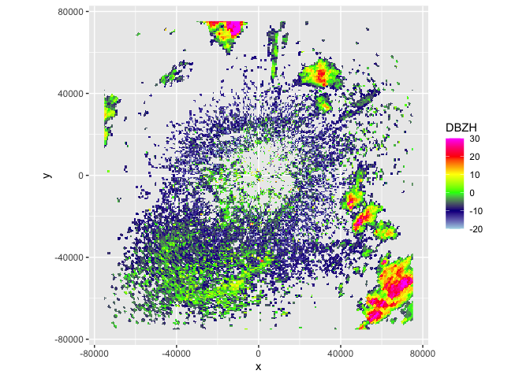
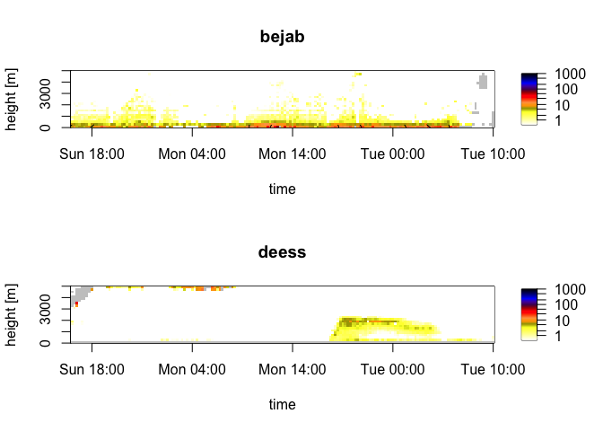

getRad is an R package that provides a unified interface to download radar data for biological and aeroecological research. It gives access to both polar volume radar data and vertical profile data from different sources and loads it directly into R. getRad also facilitates further exploration of the data by other tools such as bioRad by standardizing the data.
Installation
Install the latest released version from CRAN:
install.packages("getRad")Or the development version from GitHub:
# install.packages("devtools")
devtools::install_github("aloftdata/getRad")Usage
Download a polar volume, and then plot it using bioRad:
library(getRad)
library(bioRad)
# Plot daytime insect movements in Finland (Mäkinen et al. 2022)
pvol <- get_pvol("fianj", as.POSIXct("2012-05-17 14:00", tz = "UTC"))
plot(project_as_ppi(get_scan(pvol, 0), range_max = 75000))
plot(calculate_vp(pvol, h_layer = 50, n_layer = 40, warning = FALSE))
# Plot nocturnal migration in Finland
pvol <- get_pvol("fianj", as.POSIXct("2012-05-11 23:00", tz = "UTC"))
plot(project_as_ppi(get_scan(pvol, 0), range_max = 75000))
plot(calculate_vp(pvol, h_layer = 50, n_layer = 40, warning = FALSE))
Download a vertical profile time series from the Aloft bucket:
# Plot VPTS data for two radars
vpts_list <- get_vpts(
radar = c("bejab", "deess"),
datetime = lubridate::interval(
lubridate::as_datetime("2021-10-03 16:00:00"),
lubridate::as_datetime("2021-10-05 10:00:00")
),
source = "baltrad"
)
par(mfrow = 2:1)
for (i in names(vpts_list)) {
plot(regularize_vpts(vpts_list[[i]]), main = i)
}
Meta
- We welcome contributions including bug reports.
- License: MIT
- Get citation information for getRad in R doing
citation("getRad"). - Please note that this project is released with a Contributor Code of Conduct. By participating in this project you agree to abide by its terms.